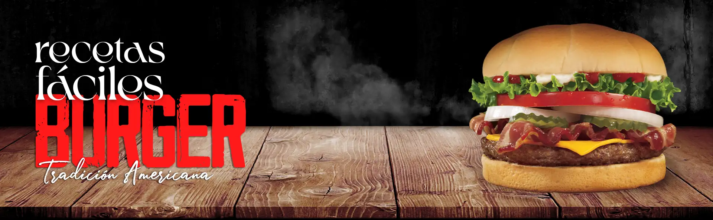
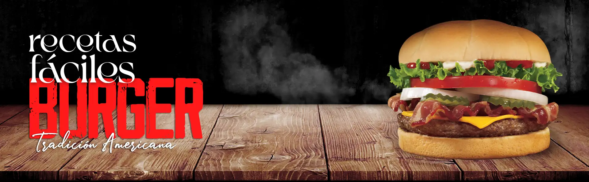

Hamburguesa clásica americana
Aquí les voy a enseñar cómo aderezar la carne para hacer hamburguesa americana auténtica. Aquí tienes todas las claves para que te conviertas en especialista indiscutible de las hamburguesas.
Ingredientes necesarios
- 350 gramos de carne de ternera.
- 1 yema de huevo.
- 1 cucharadita de mostaza de Dijon.
- 1 cucharadas de salsa Perrins.
- Para el montado:
- Hojas de lechuga.
- Rodajas de tomate.
- Anillos de cebolla.
- Rodajas de pepino agridulce.
- 2 Fetas de cheddar.
- 2 Fetas de panceta.
- Ketchup.
- Mayonesa.
- Mostaza americana.
Preparación
- Pon la carne picada en un plato hondo.
- Separa la yema de la clara y añádela a la carne.
- Añade 1 cucharadita de mostaza de Dijon, 1 cucharada de salsa inglesa y un poco de pimienta negra molida y sal a gusto.
- Con ayuda de una cuchara remueve hasta que se integren todos los ingredientes.
- Divide la carne en 2 ó 3 partes y forma las hamburguesas. Para que la carne no se me pegue a las manos las mojas en agua.
- Primero haz una pelota bien apretada y luego aplástala en un circulo de unos 12 cm de diámetro. Fíjate que tenga el mismo grosor por toda su circunferencia.
- Corta los panes en dos y sella el corte del pan en una plancha caliente. De esa forma el pan no se va mojar tanto con salsas y jugos de la carne.
- Unta la base de las hamburguesas con mayonesa.
- Pon en la base unas hojas de lechuga, rodajas de tomate y anillos de cebolla.
- Unta las hamburguesas con aceite por los dos lados, limpia los restos de miga de pan de la plancha y cocina las hamburguesas a fuego alto durantes 3 minutos por cada lado. 1 minutos antes de retirar, coloca el cheddar para derretilo ligeramente.
- Pon las hamburguesas sobre los panes y adereza con ketchup, coloca las rodajas de pepinillo agridulce, tapa y... A disfrutar!!!